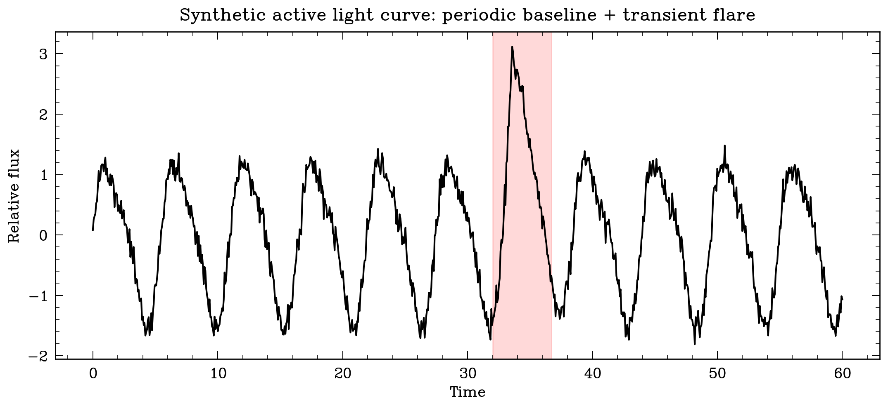
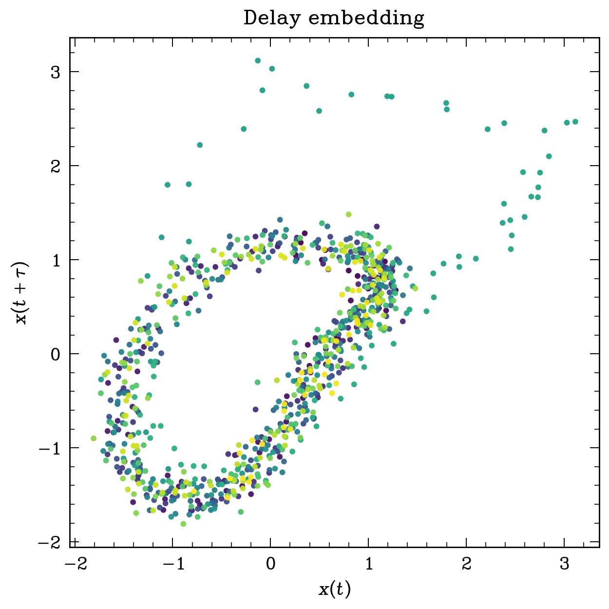
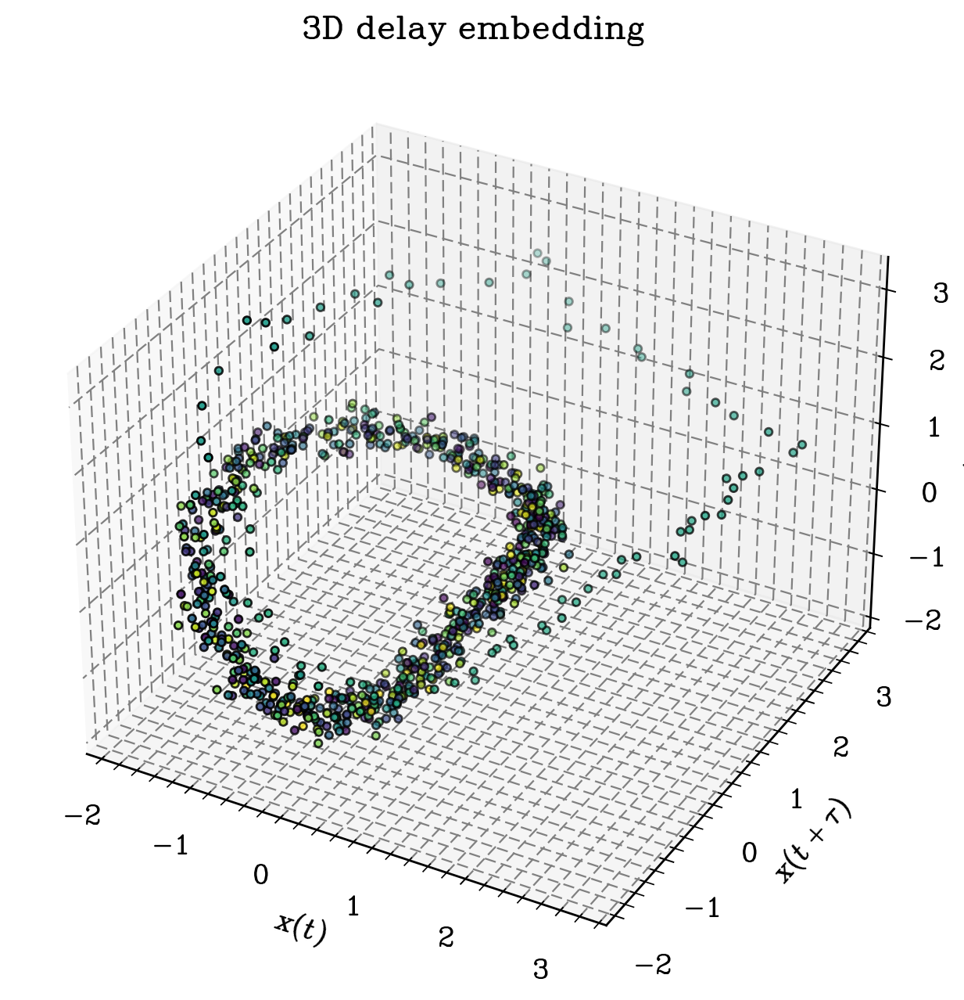
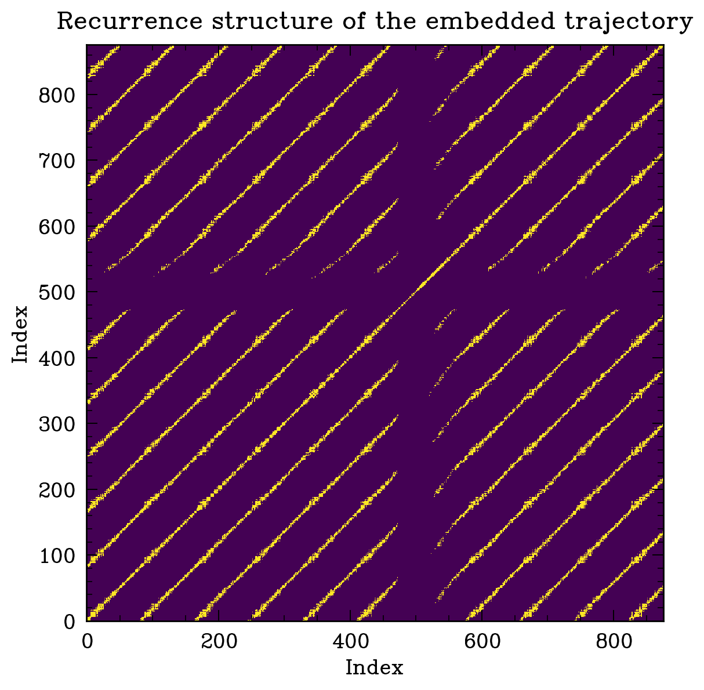

1. Introduction
Light curves are among the simplest and most useful objects in astronomy: they record how the observed brightness of a source changes in time. Yet, despite this apparent simplicity, a light curve is often the projection of a higher-dimensional dynamical process onto a single scalar observable.
This is exactly where a topological point of view becomes interesting. Instead of treating a light curve only as a list of amplitudes or a spectrum, we can reinterpret it as a trajectory in a reconstructed state space. Once the signal is embedded into such a space, its shape becomes meaningful: periodic signals tend to organize around loops, quasi-periodic signals can thicken into torus-like clouds, and transient events deform the geometry locally.
In this post I divide the discussion into two parts. In the first, I summarize the mathematical and computational foundations of a topological representation of light curves. In the second, I show a concrete computational example using a synthetic light curve with a periodic background and a localized flare-like transient. Since “reactive light curve” is not a standard astronomical expression, I interpret it here as an active or transient-bearing synthetic light curve.
Part I. Mathematical and computational foundations
2. From a scalar time series to a geometric object
Suppose we observe a light curve as a scalar sequence $$x_0, x_1, \dots, x_{N-1},$$ sampled at times $$t_0, t_1, \dots, t_{N-1}.$$ By itself, this sequence lives on a line: each observation is just one number. But if the underlying source is generated by some latent dynamical system, then the one-dimensional observation may be viewed as a projection of a richer state space.
The standard way to recover part of that hidden structure is delay-coordinate embedding. For a delay $\tau$ and embedding dimension $m$, we map the light curve to vectors of the form
$$ \mathbf{X}_i = \big(x_i, x_{i+\tau}, x_{i+2\tau}, \dots, x_{i+(m-1)\tau}\big) \in \mathbb{R}^m. $$
As $i$ runs over all valid indices, these vectors define a point cloud or sampled trajectory in $\mathbb{R}^m$. The original scalar light curve is therefore transformed into a geometric object. This is the first key step: topology does not act directly on the one-dimensional list of fluxes, but on the geometry induced by the embedding.
3. Why topology enters the problem
Once the light curve has been embedded, we can ask questions about its large-scale organization. Does the cloud wrap around a loop? Does it split into disconnected pieces? Does it contain voids, tunnels, or persistent geometric motifs across scales?
The language of algebraic topology encodes these questions through the Betti numbers:
$$ \begin{split} \beta_{0}&= \text{number of connected components;}\\ \beta_{1}&= \text{number of one-dimensional loops or cycles;}\\ \beta_{2}&= \text{number of enclosed voids in three-dimensional settings.} \end{split} $$
For many light-curve applications, the most informative quantity is often $\beta_1$. A clean periodic signal embedded in two or three dimensions often traces out a loop-like object, so persistent one-cycles become natural indicators of periodic organization.
4. Filtrations and persistent homology
A point cloud alone is not yet a topological space in a useful computational sense. We therefore build a family of simplicial complexes from it. A common choice is the Vietoris–Rips filtration: for each scale parameter $\varepsilon > 0$, we connect points whose pairwise distance is at most $\varepsilon$, and fill higher-dimensional simplices whenever all lower-dimensional faces are present.
As $\varepsilon$ increases, the complex changes. Connected components merge, loops appear, and later disappear. Persistent homology records the birth and death of these topological features across scales. The output is usually summarized as a barcode or persistence diagram, $$ \mathcal{D}_k = \{(b_j, d_j)\}_j, $$ where each pair stores the birth and death scales of a $k$-dimensional feature.
Features that persist for a long interval $d_j - b_j$ are typically interpreted as more structurally relevant than short-lived ones, which are often associated with noise or very local fluctuations.
5. Interpreting topology in the context of light curves
The interpretation is not purely abstract; it has a dynamical meaning.
- Periodic light curve: delay embeddings tend to organize around a loop, leading to a robust $H_1$ feature.
- Quasi-periodic light curve: the cloud may thicken or fold into a more complicated object, sometimes suggestive of toroidal structure.
- Strongly noisy signal: the embedding becomes diffuse, and persistent features are typically weaker or less stable.
- Transient event: a flare, dip, or burst can pull the embedded trajectory away from its baseline loop, creating local deformations or secondary branches.
In other words, topology does not replace classical tools such as the Fourier transform, periodograms, autocorrelation, or wavelets. Rather, it complements them by emphasizing global geometric structure in the reconstructed state space.
6. A practical computational pipeline
A useful workflow for topological representations of light curves is the following:
- Preprocess: detrend, normalize, and handle missing observations.
- Choose delay parameters: select $\tau$ and $m$ using heuristics such as autocorrelation decay, mutual information, or false nearest neighbors.
- Build the embedding: convert the scalar light curve into a point cloud in $\mathbb{R}^m$.
- Compute persistent homology: usually from a Vietoris–Rips filtration on the embedded cloud.
- Vectorize if needed: persistence diagrams can be converted into persistence images, landscapes, Betti curves, or summary statistics for downstream ML.
- Interpret physically: relate persistent features to periodicity, transients, state changes, or morphological variability.
In real astronomical data, irregular cadence and observational gaps matter. They may distort the embedding, so interpolation, windowing, or cadence-aware embeddings sometimes become necessary. For a first synthetic example, however, evenly sampled data is enough to illustrate the main ideas.
Part II. A synthetic active-light-curve example
7. Building the toy model
Let us construct a light curve that combines three ingredients:
- a periodic baseline, mimicking rotational or pulsational variability;
- a secondary harmonic, making the waveform slightly non-sinusoidal;
- a localized flare-like transient, introducing a short-lived deviation from the baseline dynamics.
A simple model is
$$ x(t) = 0.75\sin\!\left(\frac{2\pi t}{P}\right) + 0.18\sin\!\left(\frac{4\pi t}{P} + \phi\right) + F(t) + \eta(t), $$ where $P$ is the dominant period, $\phi$ is a phase shift, $\eta(t)$ is a noise term, and $F(t)$ is a localized flare centered at $t_0$.
In the figures below, the flare is deliberately asymmetric: it rises quickly and decays more slowly. This makes the transient look more realistic and also produces a visible geometric distortion in the embedding.

The baseline signal is approximately periodic, but the flare temporarily pushes the light curve outside its usual oscillatory pattern. Topology becomes useful precisely because it helps us distinguish this global baseline organization from localized deviations.
8. Delay embedding of the synthetic light curve
We now embed the normalized signal using a delay $\tau$ and embedding dimension $m=3$. Even when projected into two dimensions, the structure is already visible:

The dominant loop corresponds to the underlying periodic behavior. The outlying points and distortions around the loop are caused by the flare. If the signal were purely periodic and noiseless, the embedding would be much closer to a clean closed curve. Noise thickens the loop, while the transient stretches part of the trajectory outward.
In three dimensions the same idea becomes even clearer:

One should not over-interpret every twist in such a small synthetic example. The important point is qualitative: the embedded cloud contains a persistent loop-like backbone associated with the periodic component, together with a localized excursion produced by the transient event.
9. Recurrence structure
Another way to visualize the organization of the embedded trajectory is through a recurrence matrix. Two states are marked as recurrent when they are close in the embedding space. Periodic or quasi-periodic dynamics often produce structured recurrence patterns, while noise and transients break or blur them.

Although a recurrence matrix is not itself persistent homology, it is often a useful intermediate sanity check: before computing topology, it lets us see whether the embedding already contains meaningful dynamical repetition.
10. Minimal Python code
The following snippet generates a light curve similar to the one shown above and builds a delay embedding. It is intentionally compact and designed for exposition rather than production use.
import numpy as np
import matplotlib.pyplot as plt
rng = np.random.default_rng(7)
t = np.linspace(0, 60, 900)
P = 5.5
phi = 0.5
baseline = 0.75*np.sin(2*np.pi*t/P) + 0.18*np.sin(4*np.pi*t/P + phi)
# Asymmetric flare
A = 1.2
t0 = 33.5
rise = 0.45
decay = 1.8
flare = np.where(t <= t0,
A*np.exp(-(t0 - t)/rise),
A*np.exp(-(t - t0)/decay))
flare[np.abs(t - t0) > 6] = 0.0
noise = 0.08 * rng.normal(size=t.size)
x = baseline + flare + noise
x = (x - x.mean()) / x.std()
# Delay embedding
m = 3
tau = 12
n = len(x) - (m - 1)*tau
X = np.column_stack([x[j:j+n] for j in [0, tau, 2*tau]])
plt.figure(figsize=(5, 5))
plt.scatter(X[:, 0], X[:, 1], s=8)
plt.xlabel(r"$x(t)$")
plt.ylabel(r"$x(t+\tau)$")
plt.title("Delay embedding of a synthetic active light curve")
plt.show()
If you want to go one step further and compute persistent homology from the embedded point cloud, packages such as
ripser or giotto-tda are convenient choices. Conceptually, the pipeline is just:
from ripser import ripser
result = ripser(X, maxdim=1)
diagrams = result["dgms"]
H0, H1 = diagrams[0], diagrams[1]
# H1 stores the birth and death scales of loop-like features.
# A prominent long-lived point in H1 is often a signature of periodic structure.11. What the topology is telling us here
For this synthetic example, the main qualitative expectation is simple:
- a relatively persistent $H_1$ feature should encode the baseline periodic loop;
- noise should generate many short-lived features;
- the flare should thicken or deform the embedded cloud, potentially altering the lifetime of the dominant loop or creating additional local structure.
This is precisely the kind of information that can be useful when comparing classes of variable objects. Two light curves may have similar periods or amplitudes, yet very different geometric organizations in delay space. Persistent homology provides a compact way to quantify that difference.
12. Final remarks
The topological representation of a light curve begins with a conceptual shift: instead of seeing the signal only as a graph of flux versus time, we regard it as a sampled trajectory of an underlying system. Delay embeddings reconstruct part of that hidden geometry, and persistent homology summarizes how that geometry organizes across scales.
For astronomy, this viewpoint is attractive because it is naturally compatible with problems where shape matters: periodicity, morphology of variability, state transitions, transient contamination, and even representation learning pipelines for classification. In practice, topology is best used in dialogue with more classical signal-processing tools, not in isolation.
In future notes, one could push this example in several directions: compare a purely periodic light curve with a quasi-periodic one; study how missing cadence affects the embedding; or use persistence images as features for a classifier of synthetic variable-star types.
13. Suggested reading
- F. Takens, Detecting Strange Attractors in Turbulence (1981).
- H. Edelsbrunner and J. Harer, Computational Topology: An Introduction (2010).
- J. A. Perea and J. Harer, Sliding Windows and Persistence: An Application of Topological Methods to Signal Analysis (2015).
- G. Carlsson, Topology and Data (2009).
If you notice any errors or want to discuss possible extensions to real astronomical light curves, feel free to send me an email.